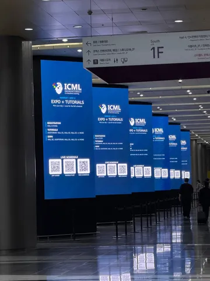
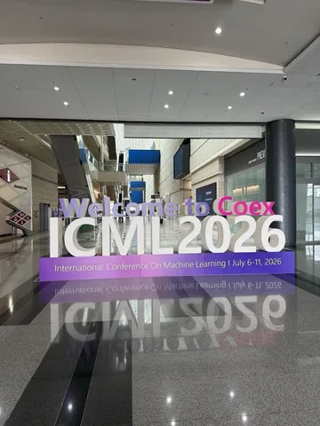
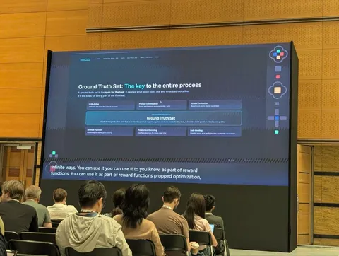

В этом году крупнейшая конференция о машинном обучении проходит в Южной Корее. По традиции будем рассказывать о самом интересном — открываем серию обзоров от инженеров и исследователей Яндекса.
Немного инсайтов о Xiaomi
Ребята тоже используют On-policy Distillation для мержа своих экспертных моделей. Вайб доклада: как мы сделали топ-1-опенсорс-модель по ИИ-индексу, с миллионным контекстом и 1000 токенов в секунду
Public report'а нет, про обучение не рассказали, но в докладе можно было подсмотреть трюки по оптимизации. Например, гибридные SWA-слои, которые реюзают KV-кэш от полного аттеншна перед ними, помогают в 7 раз уменьшить объём кэша, не потеряв в качестве.
Xiaomi MiMo-V2.5-Pro
TL;DR: Context length и Inference speed. Новая опенсорсная модель на 1 триллион параметров может работать с контекстом объёмом до 1 миллиона токенов в 10 раз быстрее (до 1000 TPS).
Претрейн — sparse-аттеншн и shared KV-кэш. На основе HSWA авторы предложили гибридный HySparse, чтобы увеличить sparsity. Это позволило в 10 раз сэкономить на объёме кэша и получить почти линейный аттеншн.
MiMo-V2.5-Pro обучали в QAT-формате, MXFP4. Пост-трейн — Multi-Teacher On-Policy distillation с top-k, а не top-1. По метрикам MOPD показал себя значительно лучше и стабильнее остальных подходов, подобных Cascade RL.
MoE RL оказался нестабилен, так как выбирается только 10% экспертов. В качестве решения прибегли к R3: Rollout Routing Replay.
Инференс Mimo-V2.5 Pro UltraSpeed — это FP4 (mxfp4) + DFlash Speculative decoding + TileRT inference engine. Для ускорения делают бакетинг по задачам (например, чат/код).
vLLM Hook v0: A Plug-in for Programming Model Internals on vLLM
IBM Research привезли инструмент, с помощью которого можно модифицировать логику в движке инференса vLLM и строить кастомные пайплайны.
Мотивация: несмотря на свою эффективность, движок vLLM не может похвастаться богатым функционалом. Авторы попробовали исправить это. Код — на GitHub.
Model Optimization Flywheel: Continuously Self-Improving LLMs in Production
Работа команды Shopify. Ребята отмечают важность голденсетов (ground truth set), потому что это потолок качества моделей, — и рассказывают, как собирают такие сеты.
Информацию получают от менеджеров. Если каппа Коэна низкая, то переписывают рубрику или инструкцию. Для подбора промпта judge пользуются GEPA и ACE. В датасет попадает и брак, и кейсы плохого срабатывания моделей. Некорректные ответы правят люди и judge.
Ещё больше о конференции читайте в канале ML Underhood: уже рассказали о работах основного трека, Spotlight-статье и первом дне. А если вы тоже на ICML, приходите пообщаться к любому из наших постеров.
Уже на конференции
#YaICML2026
Душный NLP


